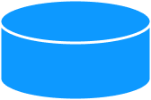
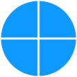

Flow Chart Chart!!
-
Start and End
This symbol represents the starting and end points and the potential outcomes of a process. It typically functions as an elongated oval with a single starting and ending point. It may contain the word "Start" or "End" within the symbol itself.
-
Process
Represented as a rectangle, the process or action symbol shows a specific process, action or function. Many flowcharts use this symbol to represent specific steps in the process it's diagramming. It can help show the basic tasks or actions that need completing.
-
Decision
Shaped as a rhombus (aka diamond), this symbol helps indicate a question that results in a "yes" or "no" answer, in addition to a possible "true" or "false" situation. Depending on the answer to the proposed question, the flowchart can then separate into various branches to complete the outline of the workflow. This symbol can be useful for more complex flowcharts with many elements.
-
Input and Output
This symbol represents any data that can be available for input and output. You can use it to represent any resources you previously used or produced. Also referred to as the data symbol and shaped as a parallelogram, it's often possible to substitute it with other symbols.
-
Document
This symbol is a rectangle with its bottom side in a wave, representing the input or output of a document. For example, you might use this symbol to outline a document input, including receiving an email or report. You can also use it to represent a document output, which might include producing a presentation or project.
-

Database
This cylinder-shaped flowchart symbol represents stored data. This data often allows for user searches and filtering capabilities. For example, it may represent the data within a real estate app that allows users to search and filter results by price, location and other search criteria.
-
Preparation
The preparation symbol helps differentiate between the steps necessary for preparing the work and the steps that involve completing the work. You may also use it to outline the arrangement of the other steps in the same process. This symbol appears as a wide hexagon.
-
Off Page Connector
Frequently used within complex charts, this symbol connects separate elements across multiple pages with the page number usually placed on or within the shape for easy reference.
-
Merge
This upside-down triangle shape symbolizes merging multiple paths into one process path. It can also depict the merging of multiple sets of information. You may consider this symbol to be a funnel combining different workflow parts.
-

Or
Similar to the summing junction symbol, the or symbol helps indicate where a specific workflow process converges. You can represent it as a circle containing a cross. It showcases the point at which a process diverges and continues into multiple branches.
-
Multiple Documents
This symbol functions similarly to the document symbol but represents multiple documents in the flowchart. It adds additional documents or reports that may be necessary for the workflow. The multiple documents symbol may offer an additional reference point in a flowchart.
-

Manual Operation
This flowchart symbol is a trapezoid representing each step in a process requiring manual completion. It's similar to the manual input symbol, but it represents an entire operation or process rather than a single step. This symbol may be useful for highlighting the process steps that aren't automatic.
{kind=link}